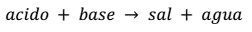
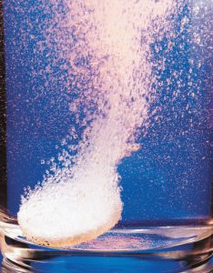

Reaccion de Neutralizacion

Se llama neutralización a la reacción que se produce entre disoluciones acidas y básicas. Todas estas reacciones dan como producto una sal y agua. La ecuación general que representa este tipo de reacción es:
imagen 1 formula de la neutralizacion
Esto lo apreciamos comunmente en aquellos comprimidos para el dolor estomacal de diversas marcas, estos con el agu se disulven
imagen 2 antiacido
La Neutralización ácido base es un proceso mediante el cual un ácido reacciona con una base o hidróxido y da como resultado una sal y agua. La más común es la reacción de un ácido fuerte contra una base fuerte. Algunos ejemplos veremos a continuación para mostrar casos de neutralización.
HCl + NaOH —-> NaCl + H2O
En este caso vemos al ácido clorhídrico contra el hidróxido de sodio. Genera cloruro de sodio y agua. En este caso basta una molécula de ácido con una molécula de la base para generar la sal. Pero no siempre es asi.
2 NaOH + H2SO4 —-> Na2SO4 + 2 H20
Aquí se necesitan 2 moléculas de la base contra 1 del ácido para formar el sulfato de sodio. Este principio se usa para averiguar la molaridad de un ácido o de una base gracias a un procedimiento llamado valoración acido base o titulación acido base. Por ejemplo, si se quiere averiguar la molaridad de un ácido se coloca a la solución de este en un erlenmeyer y se la enfrenta con otra solución de un hidróxido de concentración excatmente conocida. Esta solución de la base se la coloca en una bureta quedando por encima del erlenmeyer que tiene la solución problema del ácido. Colocamos una gota de un indicador en el erlenmeyer para que nos indique el momento exacto en el cual se ha producido la neutralización, o sea, cuando no haya exceso de base ni ácido, por ejemplo la fenolftaleína. Dejamos caer gota a gota desde la bureta al Erlenmeyer haciendo movimiendos suaves y circulares para una correcta titulación. Apenas vemos un cambio de coloración al rosa cesamos al agregado de la solución de hidróxido de sodio. Medimos el volumen agregado de la solución de NaOH y hacemos los cálculos correspondientes.
Finalmente tenemos una muestra del proceso de neutralizacion similar a los antiacidos
video descripcion de los antiacidos